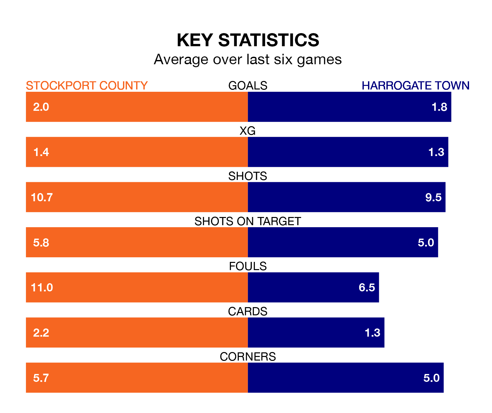

Stockport County are heavy favourites to keep all three points at home in Saturday's kick-off against Harrogate Town.
The Hatters, who sit top of EFL League Two with 28 games played, are priced at 1.3 to seal victory at Edgeley Park.
Sitting seven places and 14 points behind them in the table, Harrogate are 7.1 to win with *Betting Company*, while the draw is at 4.8.
With 61 goals in 28 games so far this season, Stockport are the league's joint-highest scorers with 2.2 goals per game. And they are conceding fewer than average, letting in 28 goals at a rate of 1.0 per game.
Harrogate, meanwhile, are below average scorers, with 1.3 goals per game, compared to a league average of 1.5. They have also conceded 1.3 goals per game.
In Ben Hinchiffe, County can rely on one of the league's safest pair of hands. He has kept 10 clean sheets in his 28 appearances this season, and no 'keeper has prevented the opposition scoring more often in EFL League Two.
In Town's net, Mark Oxley has three clean sheets in 16 games. He has conceded a goal every 74 minutes, 30% more often than the 97 minutes between goals for Hinchiffe.
In the last 10 years, Stockport and Harrogate have played each other on 16 occasions. Stockport won eight of them, Harrogate five, and they drew three times.
On average, the Hatters scored 1.7 goals and Harrogate 1.4 in those matches.
Their last meeting was on October 14, when Stockport won 3-1 away.
The Hatters are in reasonable form in EFL League Two, with three wins and two draws from their last six games.
With four wins and a draw over that period, the visitors' form is slightly better – they have taken 13 points from 18, compared to the home team's 11.
Stockport's last match was on January 27, a 5-1 win against Doncaster Rovers, with Paddy Madden (two), Connor Lemonheigh-Evans, Isaac Olaofe and Owen John Edward Bailey (own goal) getting the goals for the Hatters.
Harrogate beat Sutton United 2-1 last time out, on Tuesday, with Jack Muldoon on the scoresheet.
Saturday's match will be refereed by Ben Toner, who has taken charge of four EFL League Two games so far this season, issuing one red card and booking 22 players. He has awarded three penalties.
He is yet to oversee a match featuring either Stockport or Harrogate this season.
Updated: 10:40 (UTC), 01/02/24